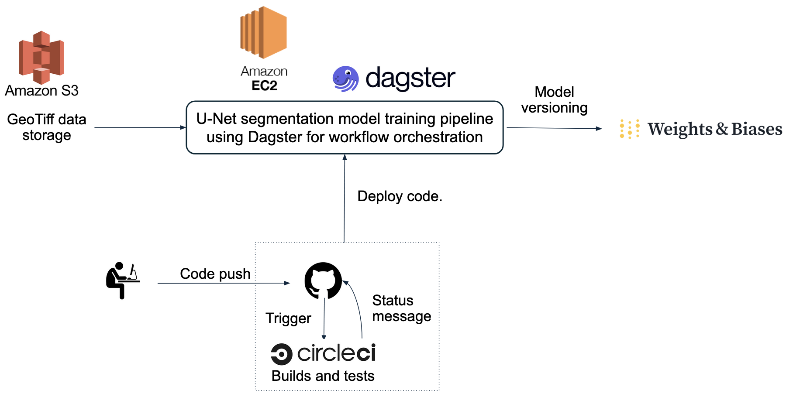
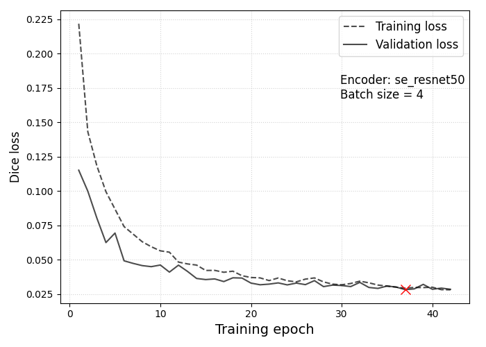
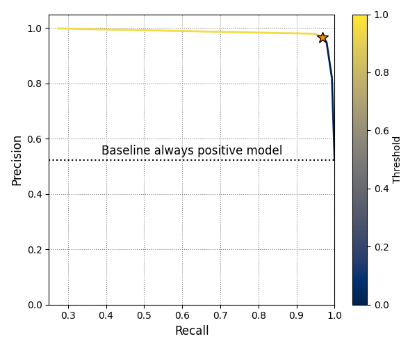
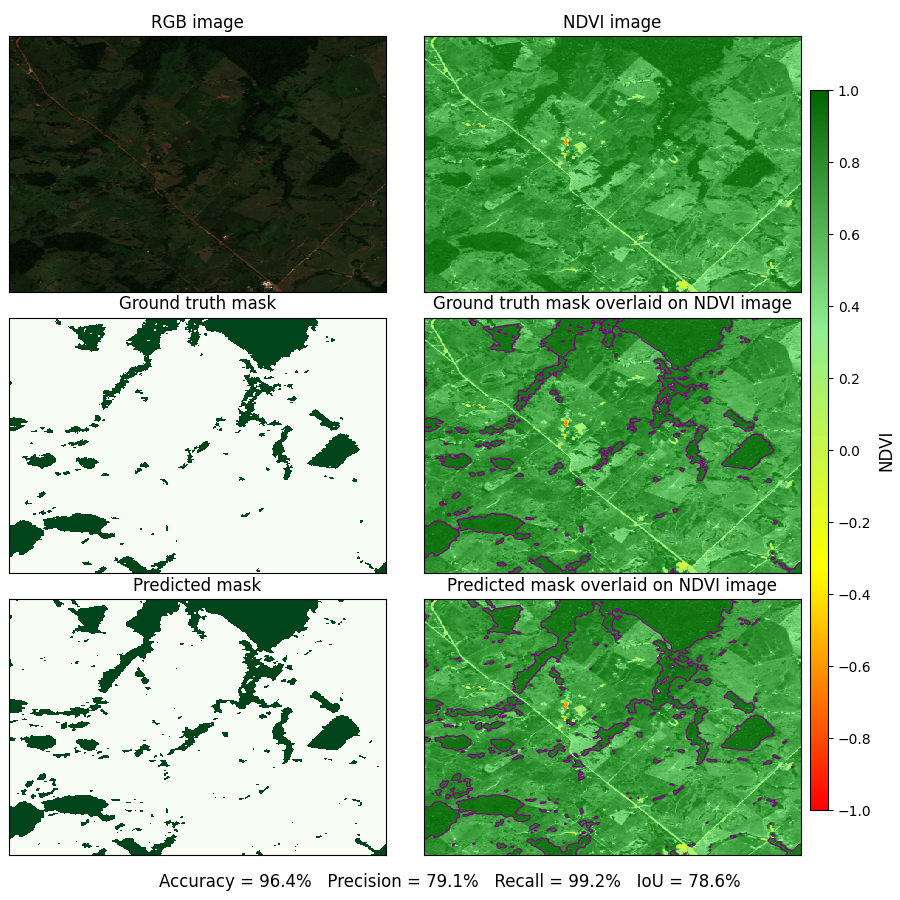

Semantic Segmentation of Amazon Rainforest Cover in Sentinel-2 Satellite Imagery
- GitHub repository: Link
- Programming languages: Python (numpy, pandas, geopandas, scipy, matplotlib), PyTorch
- Industry tools: CircleCI (CI/CD), Dagster (workflow orchestration), Weights & Biases (model versioning)
- W&B Project: URL
- Key software engineering learnings: Test-driven development, Workflow orchestration
Project Workflow

Data and Models
Data source: Bragagnolo et al. (2021) dataset of 512 \(\times\) 512 pixel Sentinel-2 GeoTIFF images covering the Amazon rainforest basin. Each GeoTiff file contains four spectral channels—red, green, blue, and near-infrared—corresponding to Sentinel-2 bands 4, 3, 2, and 8 respectively. The complete collection comprises 619 images, divided into training (499), validation (100), and test (20) subsets.
U-Net architecture and training: U-Net, introduced by Ronneberger, Fischer & Brox (2015), is a fully convolutional neural network widely used for biomedical image segmentation. Its architecture features two main components: an encoder (contracting path) and a decoder (expanding path). The encoder extracts increasingly abstract features at multiple spatial scales, capturing the context of the input image. The decoder then reconstructs the spatial resolution of these feature maps, enabling precise pixel-level classification by mapping them back to the original image size.
For this project, I used a U-Net model whose encoder was frozen with weights pretrained on ImageNet. The decoder was initialized with random weights. During training, I optimized the decoder using batch gradient descent with the AdamW optimizer. Model performance was monitored using the Dice loss on the validation dataset, and training was stopped early if no improvement in the validation loss was observed for five consecutive epochs. This approach helped prevent overfitting and ensured efficient model convergence.
Run log available here.
| Parameter | Trial values |
|---|---|
| Encoder choices | “resnet50”, “se_resnet50” |
| Trial batch sizes | 4, 8, 16, 32 |
| Initial learning rate | \(10^{-4}\) |
| Maximum no. of epochs | 60 |
- The above hyperparameter sweep returned a minimum validation loss of 0.03 for the “se_resnet50” encoder with a training batch size of 4.
Model Training Results

Loss curves for the training (dashed line) and validation datasets (solid line) for the best performing model from the W&B hyperparameter sweep. The red cross marks the epoch at which the lowest validation loss of \(\approx 0.03\) was recorded.

Precision-recall curve for the validation data at different binarization thresholds. The goal of a binary semantic segmentation model in this project is to classify each pixel in an input image as either “forest” or “not forest.” The model outputs a probability for every pixel, which is then converted into a label using a chosen threshold.
The orange star marks the threshold value of 0.35, where the model achieves its highest F1 score. The dotted horizontal line indicates the baseline performance of a model that always predicts “forest” for every pixel in the validation set.
Model Performance Analysis
| Dataset | Dataset size | Accuracy | Precision | Recall | IoU | F1 Score |
|---|---|---|---|---|---|---|
| Validation | 100 | 0.977 | 0.965 | 0.968 | 0.936 | 0.966 |
| Test | 20 | 0.974 | 0.967 | 0.970 | 0.939 | 0.968 |
The model demonstrates comparable performance on both the validation and test datasets, which is a positive sign. However, there is concern regarding the small size of the test dataset, which could potentially bias the evaluation metrics computed on the test dataset.
Below is a sample plot that demonstrates the model’s performance on an image from the validation dataset.
The Normalized Difference Vegetation Index (NDVI) is a widely used metric for assessing vegetation health and density. It is calculated using the formula: \[\begin{equation} \mathrm{NDVI} = \frac{\mathrm{NIR}−\mathrm{Red}}{\mathrm{NIR} + \mathrm{Red}}, \end{equation}\] where “NIR” is the near-infrared band and “Red” is the red band of the image.
NDVI values can range from -1 to +1, where high NDVI values (close to +1) indicate dense, healthy vegetation such as forests. NDVI values around zero correspond to barren areas with little or no vegetation, such as rocks or bare soil. Meanwhile, Negative NDVI values represent surfaces like water, clouds, or snow, which lack vegetation.
In the plot below, the model accurately identifies regions with NDVI values near +1 as forested areas. The limited precision of \(\approx 79\%\) on this sample image arisess primarily from the model mislabeling pixels within large forested areas as “forest”, thereby revealing a tendency to overlook fine granular details within such regions.

Top left panel: An RGB image from the validation dataset.
Top right panel: NDVI of the same image scene.
Middle left panel: Ground truth mask with forested areas marked in green.
Middle right panel: Ground truth mask overlaid on NDVI image.
Bottom left panel: Predicted mask from best performing model configuration.
Bottom right panel: Predicted mask overlaid on the NDVI image.
Frequently Asked Questions
1. What is the Dagster asset lineage for this project?
2. How can one access the best-fit model from this project for use in a downstream application?
Create a W&B account and API key. Store the created API key in the WANDB_API_KEY environment variable.
Have
numpy,torch,wandb, andsegmentation_models_pytorchinstalled in your local Python environment. Preferably, use uv to handle package dependencies and resolve version conflicts.
Here is the configuration I used during project development.
pip install numpy==1.26.4 torch==2.2.2 segmentation_models_pytorch==0.5.0 wandb==0.19.11- In your Python environment, download the model artifact files from W&B.
import wandb
run = wandb.init()
artifact = run.use_artifact(
"akshaysuresh1/amazonforest_segmentation/unet_with_se_resnet50:best_model",
type="model",
)
artifact_dir = artifact.download()- Load the downloaded weights into a U-Net model.
import os
import torch
from segmentation_models_pytorch import Unet
# Set torch device.
device = torch.device("cuda" if torch.cuda.is_available() else "cpu")
# Get relevant metadata from artifact.
encoder = artifact.metadata.get("encoder")
batch_size = artifact.metadata.get("batch_size")
initial_learning_rate = artifact.metadata.get("lr_initial")
weights_file = f"{encoder}_batch{batch_size}_lr{initial_learning_rate:.1e}_weights.pt"
# Intialize a U-Net model with random weights.
model = Unet(
encoder_name=encoder,
encoder_weights=None,
in_channels=4, # No. of input channels in data
activation="sigmoid",
)
# Load trained weights from downloaded W&B artifact into U-Net model.
state_dict = torch.load(os.path.join(artifact_dir, weights_file), map_location=device)
model.load_state_dict(state_dict)Your model is now good to go.